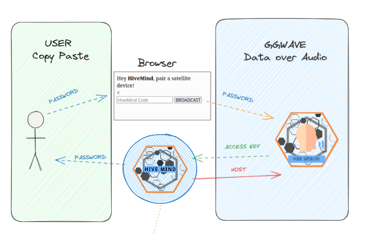

Pairing devices
You can register clients in a Mind via command line or via audio
Command Line
hivemind-core provides a command line interface to manage client permissions
$ hivemind-core --help
Usage: hivemind-core [OPTIONS] COMMAND [ARGS]...
Options:
--help Show this message and exit.
Commands:
add-client add credentials for a client
allow-msg allow message types sent from a client
delete-client remove credentials for a client
list-clients list clients and credentials
listen start listening for HiveMind connections
$ hivemind-core add-client --help
Usage: hivemind-core add-client [OPTIONS] [NAME] [ACCESS_KEY] [PASSWORD]
[CRYPTO_KEY]
add credentials for a client
Options:
--help Show this message and exit.
$ hivemind-core delete-client --help
Usage: hivemind-core delete-client [OPTIONS] NODE_ID
remove credentials for a client
Options:
--help Show this message and exit.
$ hivemind-core list-clients --help
Usage: hivemind-core list-clients [OPTIONS]
list clients and credentials
Options:
--help Show this message and exit.
$ hivemind-core allow-msg --help
Usage: hivemind-core allow-msg [OPTIONS] MSG_TYPE [NODE_ID]
allow message types sent from a client
Options:
--help Show this message and exit.
HiveMind GGWave
Data over sound for HiveMind
hivemind-core and hivemind-voice-sat have hivemind-ggwave support
pre-requisites:
-
a device with a browser, eg a phone
-
a hivemind-core device with mic and speaker, eg a mark2
-
a (unpaired) voice satellite device with mic and speaker, eg a raspberry pi
-
all devices need to be in audible range, they each need to be able to listen to sounds emitted by each other
workflow:
-
when launching hivemind-core take note of the provided code, eg
HMPSWD:ce357a6b59f6b1f9 -
copy paste the code and emit it via ggwave (see below)
-
the voice satellite will decode the password, generate an access key and send it back via ggwave
-
master adds a client with key + password, send an ack (containing host) via ggwave
-
satellite devices get the ack then connect to received host

- manually exchanged string via browser
- with a talking button